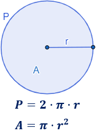

<ion-card>
  
  <ion-card-header>
    <ion-card-title>Perimetro de un circulo</ion-card-title>
  </ion-card-header>

  <ion-card-content>
    <ion-item>
      <ion-input [(ngModel)]="radioInputStr" label="Ingrese Radio (cm)" placeholder="radio"></ion-input>
    </ion-item>

    <ion-item>
      <ion-buttons slot="start">
        <ion-button (click)="calcularPerimetro()" fill="solid">Calcular Perimetro</ion-button>
      </ion-buttons>
    </ion-item>

    {{resultado}}
  </ion-card-content>
</ion-card>